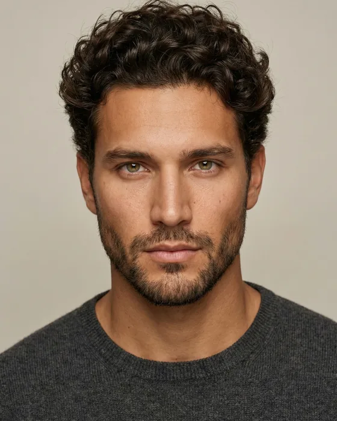
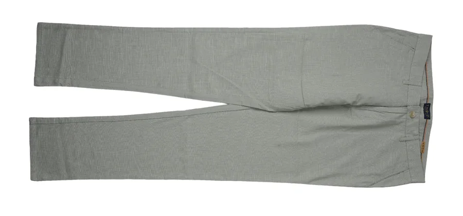
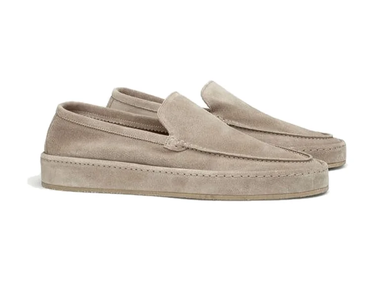
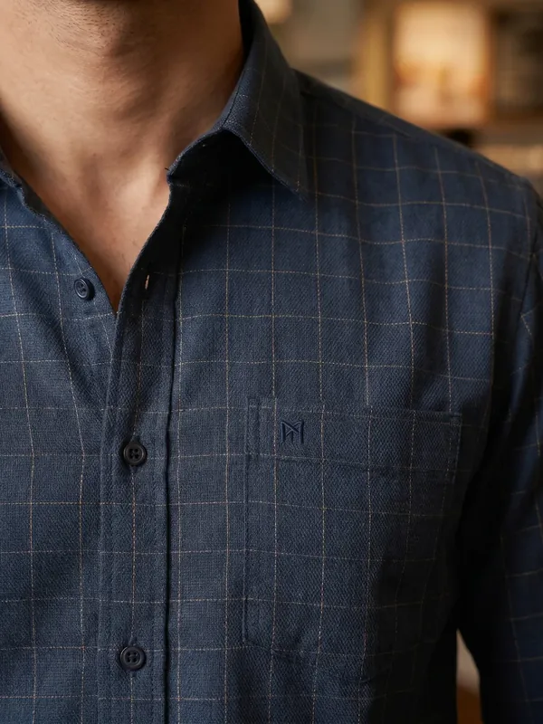
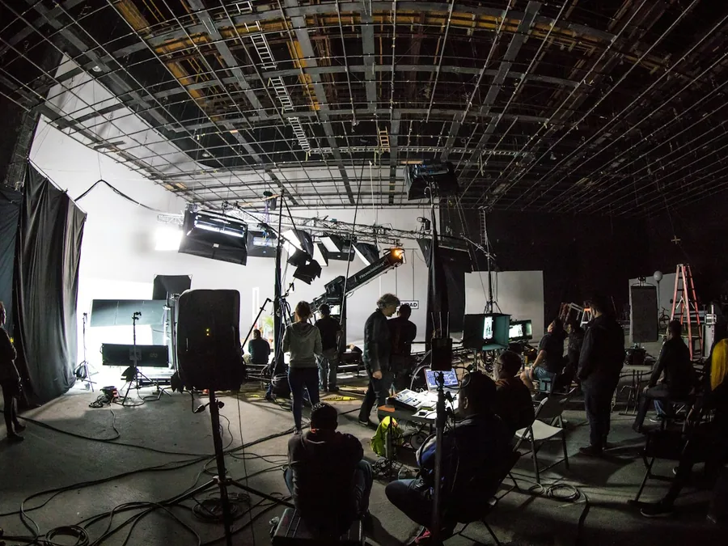
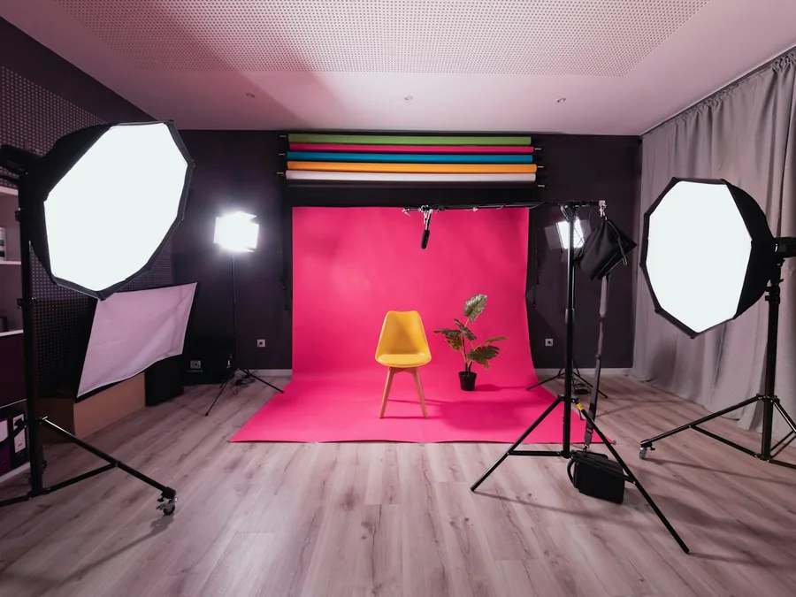
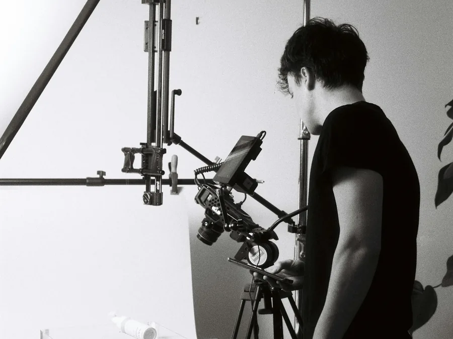
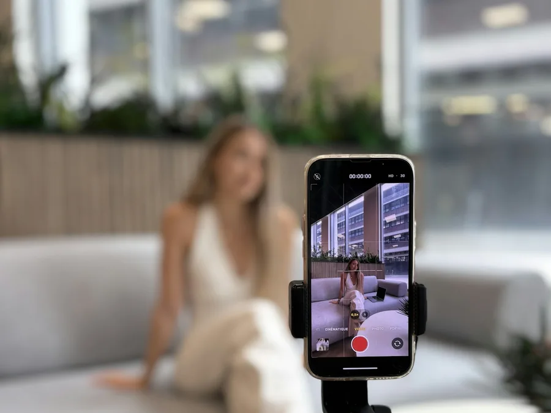
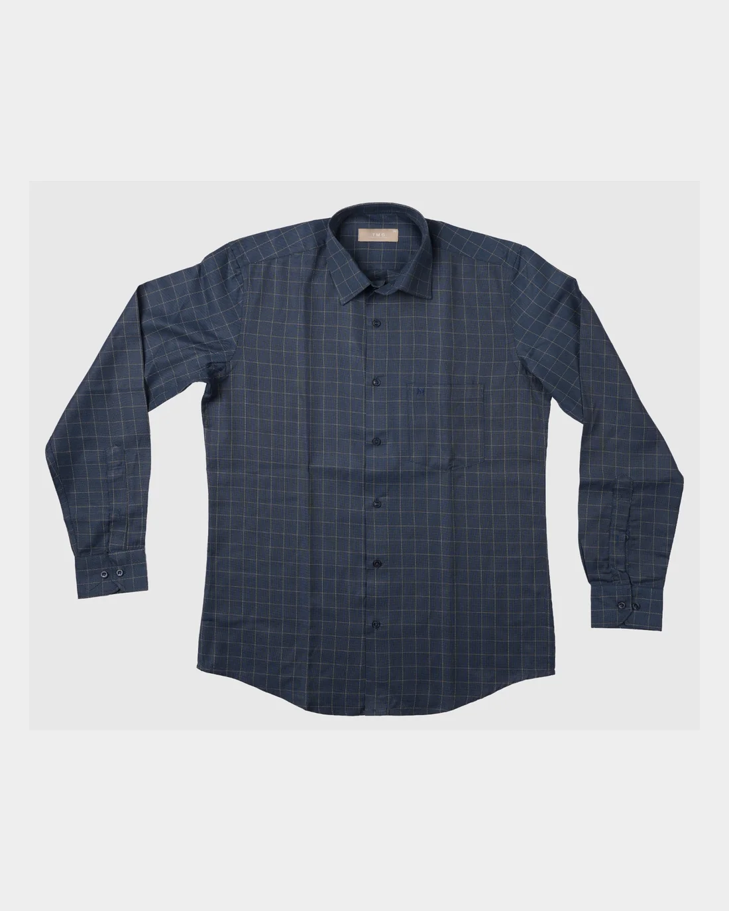
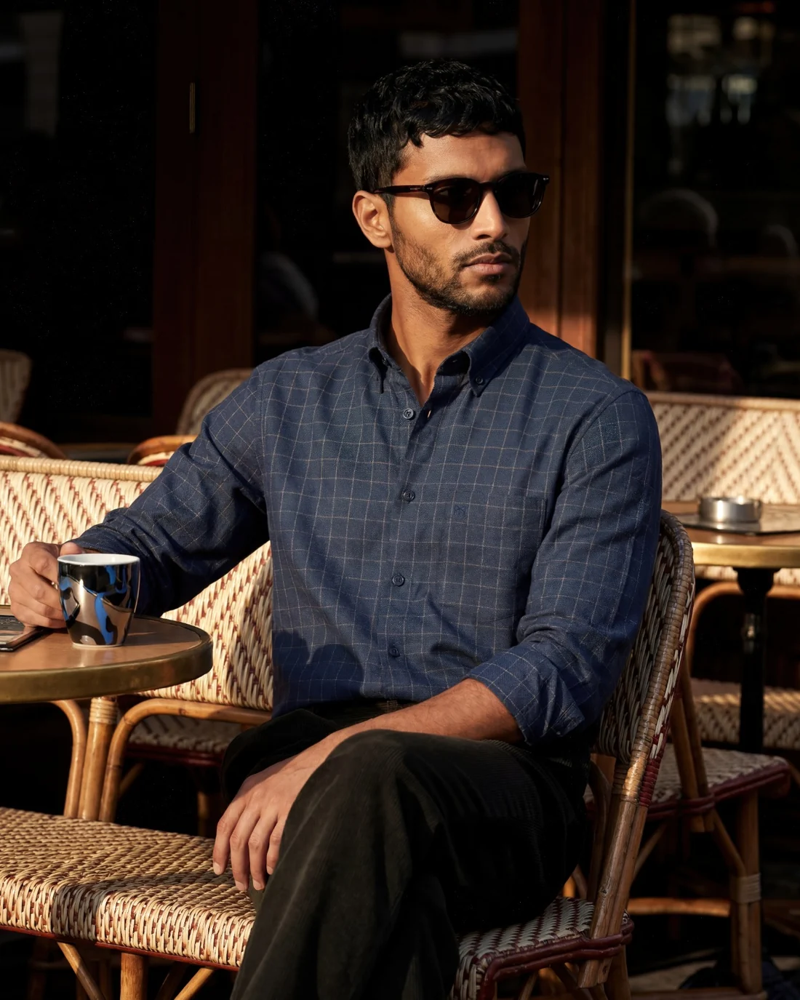

Podcast Studio
- Professional microphones
- 4K multi-cam setup
- Acoustic-treated room
Your garment on a consistent model, in consistent light, across the whole catalog — no studio day, no scheduling, and every image checked by a human against the real product.







From a podcast studio to a full video shoot — every service a modern creator, brand or agency needs, in-house.




Drag the handle. Left is the flat a brand sent us; right is the frame that ships — same garment, same check, same colour.


What you sent What shipsSame garment, same colour, same check — off the table and onto a body.
Four steps. The third one is a person, and it is the reason the other three are worth anything.
The product photos you already have — front and back, decent light. We confirm they are usable before quoting.
You pick the model, the poses and the setting once. It holds across the whole catalog.
Print placement, seams, colour, drape, hardware — matched to your real garment. Failures die here, not in your store.
Crops and ratios for your store and marketplaces, with disclosure guidance where a platform asks for it.
That's the entire job, and it's why a human QA step sits between the AI and you. Every image is checked against your real product — print placement, seams, colour, drape, hardware. Images that flatter the garment by changing it get rejected before you ever see them.
The flat shots or ghost-mannequin photos you already have — front and back, decent light, any phone camera at product quality works. If your current shots aren't usable we'll tell you exactly what to reshoot before quoting, not after.
Yes — that's one of the biggest advantages. Your whole catalog can share consistent model looks, poses and lighting, so the grid finally looks like one brand. You choose the model direction (age, style, setting) at the start and it holds across every SKU.
Policies differ by platform and they change — some require AI-generated imagery to be disclosed or restrict it for certain categories. We track the current rules, deliver images that comply for the channels you name, and tell you plainly where a label or a real photo is required.
The models are synthetic — not generated from any real person's likeness without consent, ever. No scraped faces, no celebrity look-alikes. You get documented usage rights to every delivered image.
For brand campaigns and hero imagery — probably yes, and we'll say so. AI on-model photography wins where shoots break down: catalog scale, restocks, colourway variants and speed. Most brands end up with both, each doing what it's best at.
Would you rather hire one person? Our team delivers AI Video & Photography end to end — or you can brief an approved AI Video & Photography specialist directly from our curated network.
Find an AI Video & Photography specialistTell us the garments and where the photos will run. Fixed quote in 24 hours, and asking costs nothing.